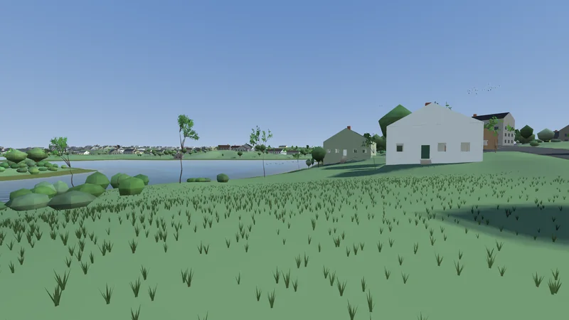
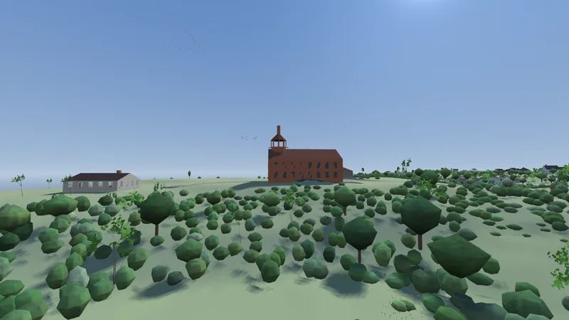
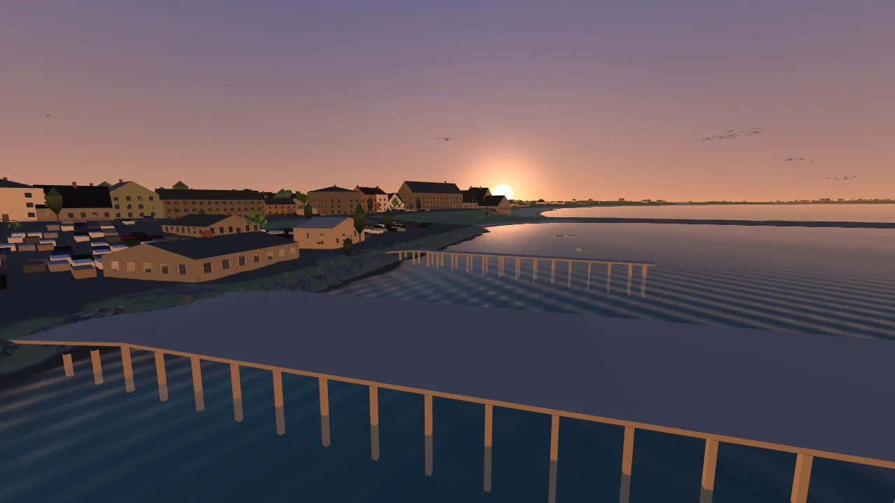
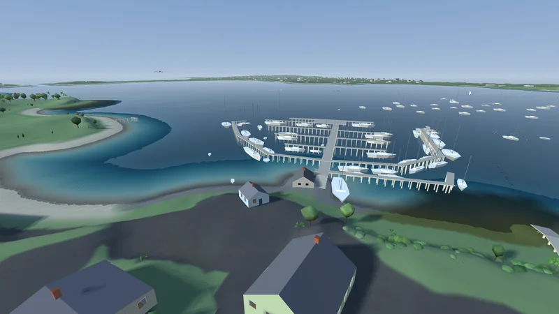
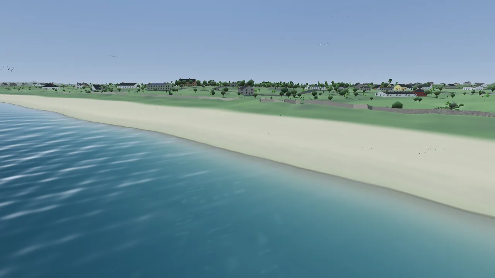

Block Island, Rhode Island, measured rather than designed. The ground comes from a laser survey of the island by the US Geological Survey, measured every metre, so every hill, bluff and pond is where it is, and it is a real 9.6 km on foot from Sandy Point to the Mohegan Bluffs.
All 3,240 buildings stand where buildings stand, their footprints, heights and roofs read from the same survey. Both lighthouses light. The sun, the tide and the weather are the real ones for the date you play.
Walk it, sail it or drive it, starting at Twin Maples on Beach Avenue.





game by magmacrunch media
terrain USGS 3DEP 1 m lidar, public domain
starts at Twin Maples